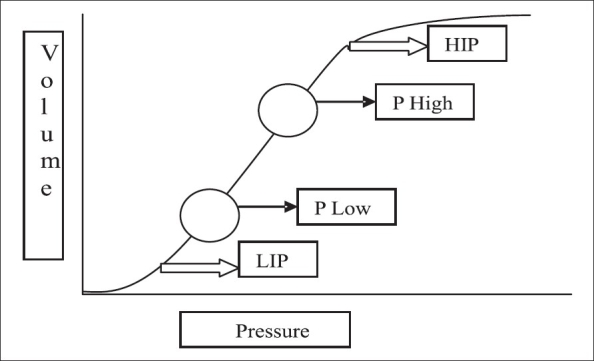

As mesmas variáveis, cruzadas. O loop pressão-volume mostra onde, na curva do pulmão, você está ventilando: no joelho que recruta, na rampa que protege, ou no bico de pato que hiperdistende. Para a Dani.

"Este é o paciente." A SpO₂ sobe com o PEEP — até onde ir?
Homem, 50 anos, pneumonia aspirativa com SDRA moderada. Hipoxêmico, pulmão recrutável. Em VCV protetor (VC ~6 mL/kg), PEEP 5, FiO₂ 0,8 — e ainda assim SpO₂ 88%.
O loop começa "deitado": o fim-expiração cai abaixo do joelho inferior — alvéolos colabando a cada ciclo. Você sobe o PEEP e a SpO₂ melhora. Abra o Laboratório (com este paciente) e titule você mesmo.
A SpO₂ responde lindamente ao PEEP. Qual o seu alvo de PEEP — e quando parar de subir? Decida antes de revelar.
"SpO₂ subindo = sempre mais protetor." O PEEP foi escalado a 18 perseguindo SpO₂ de 99%. Mas o fim-inspiração ultrapassou o joelho superior: o loop ganhou bico de pato, a driving disparou, a complacência caiu e a PA despencou. A oxigenação até regrediu — alvéolos hiperdistendidos comprimem capilares e desviam fluxo (mais espaço morto).
Recuou-se para o PEEP da melhor complacência / menor driving (~12), onde o loop é uma diagonal limpa: SpO₂ adequada (não máxima), driving baixo, PA estável. PEEP recruta ou hiperdistende — a proteção se lê na driving, na complacência e na hemodinâmica, não só na SpO₂.
Seis perguntas para ler o loop P-V e a curva do pulmão — e desarmar o "SpO₂ acima é sempre melhor".
À esquerda, o loop pressão-volume sobre a curva do pulmão (sigmoide). À direita, o loop fluxo-volume. Troque o cenário e veja a alça P-V mudar de forma — joelho inferior, rampa, bico de pato.
Mova o PEEP e o VC sobre a curva sigmoide e leia o compromisso: recrutamento, driving, complacência, SpO₂ e PA. Carregado com o caso SDRA recrutável · PEEP 5
complacência dinâmica × PEEP — o pico da curva é o PEEP de melhor compromisso
Honestidade do modelo: curva sigmoide única e idealizada (pulmão real é heterogêneo, com regiões em zonas diferentes da curva ao mesmo tempo). SpO₂ e PA são proxies didáticos do compromisso recrutamento × hiperdistensão × hemodinâmica — não fórmulas clínicas. A melhor PEEP real se titula à beira do leito (complacência, driving, troca, hemodinâmica, imagem), não por um número único. O loop F-V usa o modelo linear do Módulo 3.
Cinco questões sobre loops, recrutamento e o limite da SpO₂ como alvo.